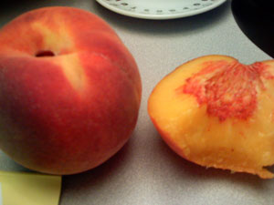

Frog Hollow Farm peaches
For all the talk I had heard about Frog Hollow Farm peaches, I firmly expected to be somewhat disappointed. My friend Kim waited over a month for her birthday shipment of 24 peaches, and it finally arrived today. I may have been more excited than her. She brought the boxes into my office this afternoon, and we were as giddy as Ralphie and his little brother on Christmas morning in A Christmas Story. An opened box revealed 12 perfectly round peaches, packaged more carefully than an Apple computer in foam and tissue paper. We examined each peach, looking for one ripe enough to eat. After going through both boxes, we found one that seemed soft enough to be risk-free.

I have a reputation in my family as a peach-eater. I once famously ate a dozen peaches (in one sitting) that were meant to be shared. That was back in the day when peaches were reliably good, especially those from my grandfather’s orchard. When peaches are good, there is no stopping me. I’d take a perfect peach over any other food. I don’t know what has happened since those days, but I swear it’s been five years since I’ve had a perfect, sweet peach. Frog Hollow peaches are absurdly expensive even before shipping charges, but they are worth every penny to a peach fanatic such as myself. When we’re done with Kim’s, I’ll covertly order more. Hours later, I can’t get the taste out of my head.
The perfection of a Frog Hollow peach lies in its texture. It’s not soft and mushy, and it doesn’t gush juice, the way you think you want it to. It’s juicy for sure, but in a civilized, controllable way. The flesh is soft, but manageable, at least at this early stage of ripeness. The color is deep orange, as it should be, and the flavor is sweeter than sugar, and the essence of peachiness.
Comments
Oh, I’m with you on the peach thing. One of my fondest memories is of a vacation in the south of France when I was 10, in a little village about 10 miles from Perpignan: the guy we had rented the house from had orchards in the area, and he greeted us on the day of our arrival with a huge basket of the biggest, sweetest, most delicious peaches I’d ever eaten before, or have since. I just made some peach and mango jam (a particularly heavenly combo), but I wish I had some really good peaches to use, instead of the okay-but-not-great ones I find at the supermarket…
You lucky, lucky man! How awesome. Those peaches sound divine and I’m suddenly being inspired to give them as gifts (wedding! housewarming! birthday!). So thanks for that.
I tasted two more today, and the second one was twice as good as the others I had. Really, these peaches are outrageous.
Christine: Your France stories kill me. It all sounds so romantic!
Luisa: Congratulations on your move to Queens! Kim (whose peaches I’ve been enjoying) lives in Jackson Heights and loves it.
Oh, they ship? Real peaches? Oh, goodness, they do! Thank you for the lead! Thank you, thank you, thank you!
Add a comment